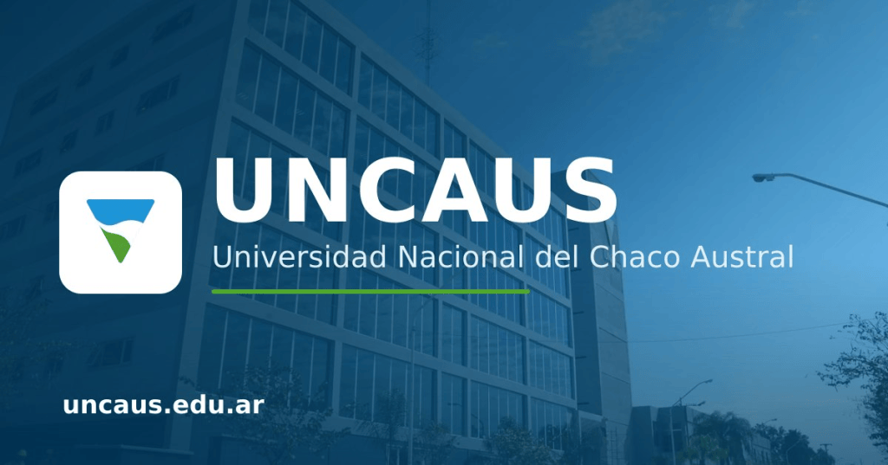

UNCAUS - Universidad Nacional del Chaco Austral

La Universidad Nacional del Chaco Austral (UNCAUS) es una institución pública e interdisciplinaria fundada en 2007, con sede central en Presidencia Roque Sáenz Peña, Chaco, Argentina. Nació sobre la base de la ex Facultad de Agroindustrias de la Universidad Nacional del Nordeste (UNNE) y se destaca por su fuerte compromiso con el desarrollo científico, tecnológico, social y económico del Norte Argentino.
UNCAUS combina una sólida infraestructura universitaria (aulas tecnológicas, laboratorios de investigación, unidad médica y de investigación de salud, y complejo deportivo) con una destacada oferta educativa tanto en modalidad presencial como a distancia (UNCAUS Virtual).
La oferta académica se organiza y distribuye a través de las siguientes áreas de estudio:
Áreas de Ingeniería y Tecnología
| Carreras | Carga horaria total | Titulo de grado | Titulo intermedio (3 años) | Duración |
| Ingeniera en sistemas | 3810hs | Ingeniero en Sistemas de Información | Analista Universitario de Sistemas | 5 años |
| Ingeniería Industrial | 3993hs | Ingeniero/a industrial | Técnico en Administración de Empresas Industriales | 5 años |
| Ingeniería química | 3795hs | Ingeniero/a Químico | Técnico Químico Laboratorista | 5 años |
| Ingeniería Zootecnista | 3545hs | Ingeniero/a Zootecnista | No posee | 5 años |
Área de Ciencias Naturales y Agropecuarias
| Carreras | Carga horaria total | Titulo de grado | Titulo intermedio (3 años) | Duración |
| Ingeniería Zootecnista | 3545hs | Ingeniero/a Zootecnista | No posee | 5 años |
Área Salud
| Carreras | Carga horaria total | Titulo de grado | Titulo intermedio (3 años) | Duración |
| Medicina | 5580hs | Médico/a | No posee | 6 años |
| Farmacia | 3100hs | Farmacéutico/a | Técnico/a Químico/a | 5 años |
Área de Economía y Administración
| Carreras | Carga horaria total | Titulo de grado | Titulo intermedio (3 años) | Duración |
| Contador publico | 3195hs | Contador publico | Técnico Universitario en Administración | 5 años |
- INVESTIGACION Y DESARROLLO
Generamos conocimiento
Investigamos para ampliar las fronteras del conocimiento en distintas disciplinas.
Trabajamos en red
Colaboramos con universidades, organismos e instituciones para potenciar el desarrollo científico.
Transferimos innovación
Transformamos la investigación en soluciones para empresas, organizaciones y la comunidad.
Impactamos en la región
Cada proyecto busca contribuir al crecimiento social, productivo y tecnológico del territorio.
Una institución pública al servicio de la comunidad
-Historia
Creada en 2007 por Ley Nacional, la UNCAUS nació para garantizar el acceso a la educación superior en el Chaco Austral y ha crecido de forma sostenida desde entonces.
-Misión
Formar profesionales íntegros, generar y transferir conocimiento científico-tecnológico, y aportar al desarrollo social, productivo y cultural de la región.
-Visión
Ser una universidad de referencia en el norte argentino, reconocida por su calidad académica, su compromiso territorial y su capacidad de innovación.